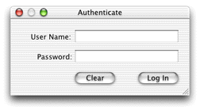
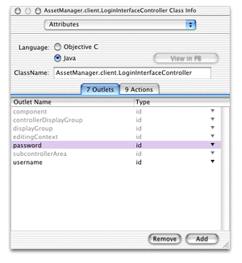
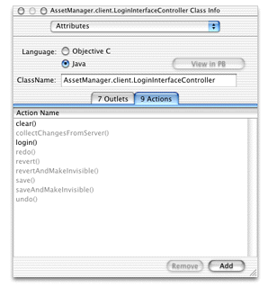
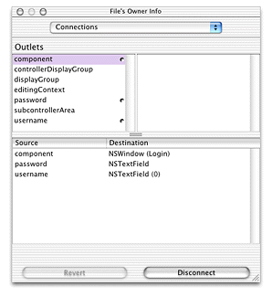
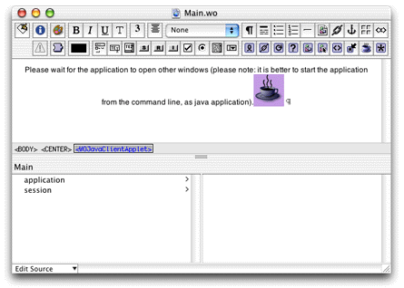

The first step in building a login window is to build the user interface for it. Add a nib file to your project and open it in Interface Builder. Add two text fields with labels and two buttons. A suggestion appears in Figure 20-1.
Figure 20-1 Login window user interface
If you want to make the password text field secure (so that
typing in it produces asterisks rather than characters), see "Custom Views" to learn how
to add custom view widgets to a nib file. Substitute javax.swing.JPasswordField in
place of the custom view widget used in that section.
Then, add outlets to File's Owner for each text field, naming them "username" and "password." See "Custom Views" or "Programmatic Access to Interface Components" to learn how to add outlets. The outlets pane should then appear as shown in Figure 20-2.
Figure 20-2 Add outlets named username and password
Also add two new actions called "login" and "clear." You add actions the same way as you add outlets except you add them in the Actions pane rather than in the Outlets pane. The Actions pane should then appear as in Figure 20-3.
Figure 20-3 Add actions
Finally, connect the outlets and the actions to the widgets
you added. Control-drag from File's Owner to the User Name text
field and bind it to the username outlet.
Control-drag from File's Owner to the Password text field and
bind it to the password outlet. Control-drag
from the Log In button to File's Owner and bind its target aspect
to the login action. Control-drag from the Clear button to File's
Owner and bind its target aspect to the clear action.
File's Owner's connections should then appear as shown in Figure 20-4.
Figure 20-4 File's Owner with new connections
Save the nib file.
To load this interface when the application launches, you
use a binding provided on the Main component. Open Main.wo in
WebObjects Builder and select the WOJavaClientApplet dynamic element,
as shown in Figure 20-5.
Figure 20-5 Select the WOJavaClientApplet dynamic element
Then, open the WOJavaClientApplet Binding Inspector by choosing
Inspector from the Window menu. This shows you all the possible
bindings for the WOJavaClientApplet dynamic element. For the interfaceControllerClassName binding,
enter the fully qualified name of the login nib file you created
in this chapter, making sure to put it in quotation marks. An example
appears in Figure 20-6.
Figure
20-6 Add value for interfaceControllerClassName binding
The nib file specified as the value for this binding is loaded when the application starts up. Save the Main component and build and run the project and the login nib file should appear.